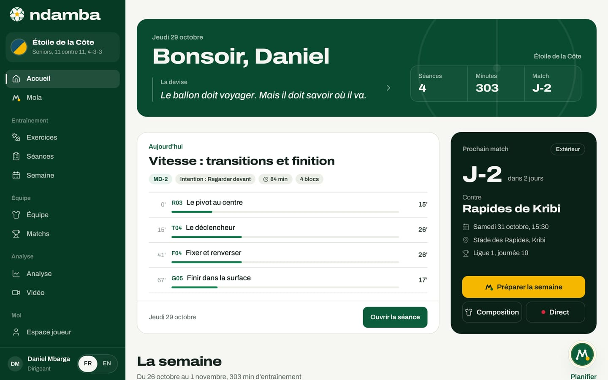
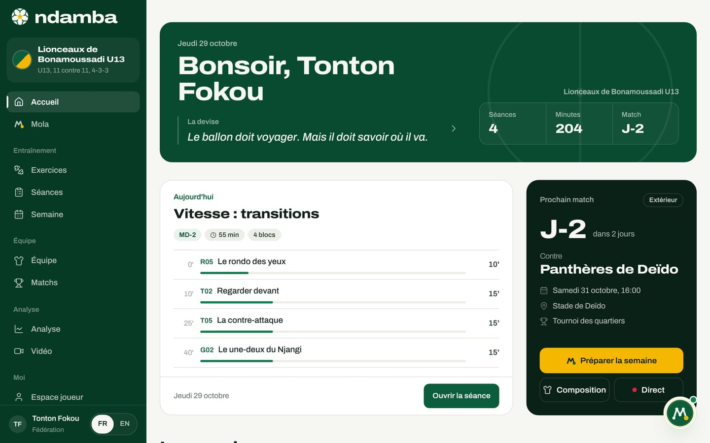
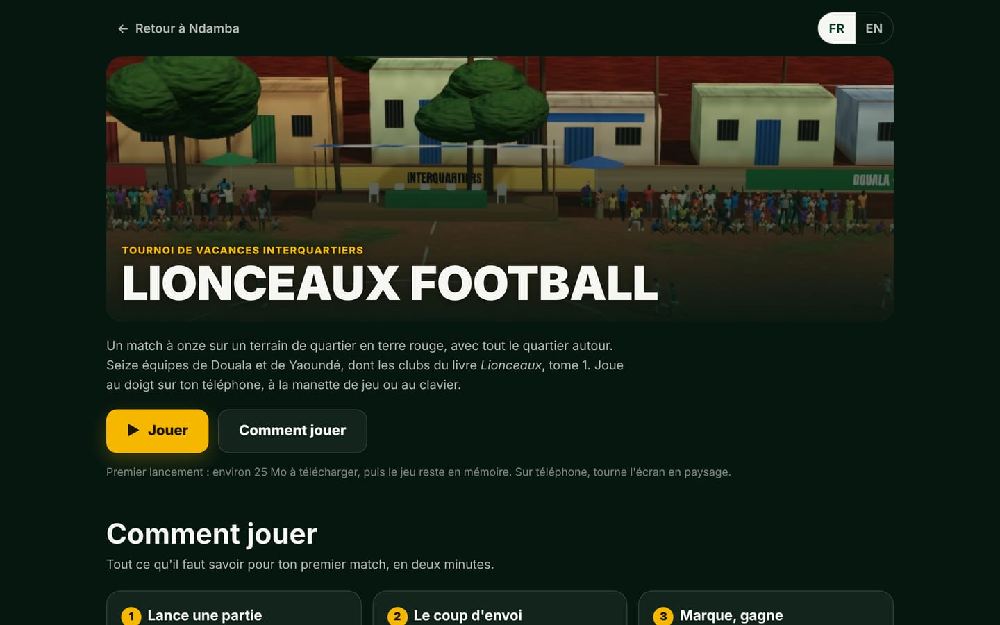
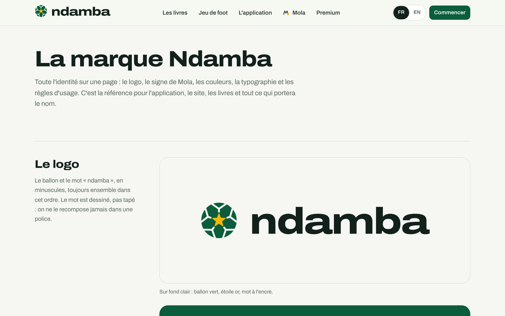

La feuille de route
L’inventaire exact de ce qui existe aujourd’hui, les chantiers prévus et ce dont ils dépendent, les indicateurs à suivre et la façon de les mesurer, ce qu’un investisseur ou un partenaire peut apporter, et comment tout vérifier soi-même en dix minutes.
10 min de lecture
Ce dernier chapitre fait le point. D’abord un inventaire, compté dans le code et dans les contenus, pour que chacun sache ce qui existe vraiment. Ensuite les chantiers prévus, sans date que l’on ne pourrait pas justifier : chacun est rattaché à une étape du plan du chapitre 23. Puis les indicateurs à suivre, avec la façon de les mesurer aujourd’hui. Enfin, ce qu’un investisseur ou un partenaire peut apporter, et comment vérifier tout cela par vous-même.
Ce qui existe aujourd’hui
Tout ce qui figure dans ce tableau fonctionne et peut être ouvert dans la version actuelle (Ndamba 1.0.0, selon les Réglages).
| Élément | Aujourd’hui | Où le trouver |
|---|---|---|
| Le Code Njangi | 36 chapitres en neuf parties, plus un avant-propos et des annexes | Les livres, lecture en ligne |
| Les exercices | 64 fiches avec schéma, en 8 familles, reliées aux 7 intentions et aux 10 compétences | Exercices |
| Lionceaux, tome 1 | 40 chapitres, 5 parties, 5 pays, 168 illustrations | Les livres |
| Les Leçons du Ballon | 40, une par chapitre du roman | Espace joueur |
| Lionceaux Football | Un match à onze, seize équipes de Douala et de Yaoundé, au doigt, à la manette ou au clavier | Jeu de foot |
| Les rôles | 6 : joueur, entraîneur, analyste, parent, manager, fédération ou ligue | Conversation d’accueil, Réglages |
| L’espace joueur | 3 niveaux selon l’âge (moins de 13 ans, 13 à 16 ans, 17 ans et plus), espace de performance dès 16 ans | Espace joueur |
| Les formules | 5, avec un bouton Activer (démo) | Premium |
| Les langues | 2, français et anglais, sur chaque écran | Sélecteur FR et EN |
| Les écrans | 27 adresses dans l’application (26 écrans), 5 pages publiques et la page d’accueil de Mola | Le menu |
| Les démos | 2 : club pro (Étoile de la Côte, 22 joueurs) et académie U13 (Lionceaux de Bonamoussadi, 15 joueurs) | Page d’accueil du site |
| Mola | 11 actions, dont 2 qui attendent votre accord (la convocation et le calendrier) | Mola |
| Le codage en direct | 14 codes d’événement, des passes aux buts, sur 16 boutons (19 si l’on code aussi l’adversaire) | Analyse |
| L’Indice Njangi | Un indice sur 100, 5 sous-indices sur 20, 5 niveaux de lecture | Le rapport de match |
| Les systèmes de jeu | 14 systèmes de départ pour 5 formats, de 5 contre 5 à 11 contre 11 | Les équipes et les matchs |
| Les données | 17 tables enregistrées sur l’appareil, avec export et restauration | Réglages |
S’y ajoutent deux pages qui servent la présentation du projet : Revue du projet, qui montre les quatre projets un par un (le roman, le livre de la méthode, l’application, Mola), et La marque Ndamba, qui réunit sur une page le logo, le signe de Mola, les couleurs, la typographie et les règles d’usage.
Ce que cet inventaire veut dire, pour un investisseur, tient en un mot : cohérence. Les pièces ne sont pas posées côte à côte, elles sont reliées. Les 64 exercices viennent du livre et nourrissent les séances. Le rapport de match calcule l’Indice avec les formules du livre et conseille des exercices pour les sous-indices les plus faibles. Mola utilise les mêmes fonctions que les écrans. Les leçons du roman alimentent l’espace des plus jeunes, et le jeu reprend les clubs du roman. Le tout parle un seul vocabulaire, les sept intentions, en deux langues. Refaire cela demanderait d’écrire une méthode, pas seulement du code.


Deux limites de l’existant méritent d’être dites ici, parce qu’elles commandent la suite. Les données restent sur chaque appareil, sans comptes ni synchronisation (chapitre 25). Et les paiements ne sont pas branchés : activer une formule est une démonstration (chapitre 24). Le rôle Fédération ou ligue, enfin, ouvre aujourd’hui le même accueil que celui d’un entraîneur.


Ce qui vient ensuite
Les chantiers ci-dessous sont prévus. Aucun n’a de date de livraison annoncée ; quand une année figure, c’est celle de l’étape du plan qui en a besoin.
| Chantier | Pourquoi | Dépend de | Étape du plan |
|---|---|---|---|
| Comptes et synchronisation | Partager entre le staff, les joueurs et les parents ; mesurer l’usage avec l’accord de chacun | Les principes du chapitre 25, un hébergement | En service pendant l’étape 2 (2028 à 2029) |
| Paiements | Encaisser les formules ; la page Premium annonce Mobile Money et cartes « bientôt » | Un prestataire de paiement | Au plus tard pendant l’étape 2 |
| Comptes du staff | Plusieurs membres d’un staff sur la même équipe | Les comptes | Étape 2 |
| Limites des formules | Aligner le code sur la page Premium (seules deux limites existent aujourd’hui) | Les paiements | Avec les paiements |
| Vidéo partagée | Faire circuler extraits et dessins au sein d’un club | Les comptes, du stockage | Après les comptes |
| Formation des entraîneurs | 100 entraîneurs formés, puis les premiers certifiés Njangi | Des formateurs, des modules | Étapes 1 et 2 |
| Références de l’Indice par âge | Savoir ce qu’est un bon Indice en U13 ou en U17 | 1 000 matchs codés, partagés avec accord | Étapes 1 et 2 |
| Modèle de jeu national et vue des sélections | Faire travailler U15, U17 et U20 sur un même modèle | Un partenariat avec une fédération | Étape 3 (2030) |
| Lionceaux, tome 2 : La Tanière des Lionceaux | Poursuivre la saga, puis les tomes 3 à 6 | Écriture et illustration | Sans date annoncée |
| Plus de langues | Toucher d’autres joueurs, familles et fédérations | Traduction de l’application et des livres | Au rythme des fédérations qui rejoignent le modèle |
Les titres des tomes suivants sont déjà fixés : Premier contrat, La CAN, Mondial 2030 et 2034, l’étoile.
Dans quel ordre, et pourquoi. Un paiement doit être rattaché à une personne : les paiements et les comptes avancent donc ensemble, et ils viennent en premier, parce qu’ils conditionnent à la fois le revenu, le partage entre le staff et les familles, et la mesure de l’usage. La formation des entraîneurs et les clubs pilotes, eux, n’attendent pas le code : ils peuvent commencer dès aujourd’hui avec l’application telle qu’elle est. Les références par âge demandent des données : pendant l’étape 1, elles viennent des sauvegardes partagées avec accord, puis des comptes. La vidéo partagée et les comptes du staff suivent naturellement les comptes. La vue des sélections et le modèle de jeu national viennent quand une fédération s’engage. Les livres et les langues avancent en parallèle, avec d’autres métiers : l’écriture, l’illustration, la traduction.
Les indicateurs à suivre
Un indicateur ne sert que s’il peut se mesurer. L’application ne contient aucun outil de mesure d’audience et ne remonte rien d’elle-même : pendant l’étape 1, la mesure repose donc sur ce que les clubs pilotes déclarent et sur les sauvegardes qu’ils acceptent de partager.
| Indicateur | Objectif proposé | Comment le mesurer aujourd’hui |
|---|---|---|
| Clubs et académies pilotes actifs chaque semaine | 20 (étape 1) | Déclaration des clubs, sauvegardes hebdomadaires partagées avec accord |
| Entraîneurs formés à la méthode | 100 (étape 1) | Registre des formations |
| Matchs codés | 1 000 (étape 1) | Les sauvegardes partagées : chaque match codé y figure avec ses tags |
| Références de l’Indice par catégorie d’âge | Une par catégorie (étape 2) | Calculées à partir des matchs codés |
| Équipes sur le modèle commun | 300 (étape 2) | Pas mesurable sans comptes |
| Entraîneurs certifiés Njangi | Les premiers (étape 2) | Registre de certification, à créer |
| Formules payantes actives | Pas d’objectif chiffré | Pas mesurable : les paiements ne sont pas branchés |
| Sélections sur le modèle national | U15, U17 et U20 (étape 3) | Accord avec la fédération |
| Résultats de l’équipe A | Un quart de finale ou mieux en 2034, le trophée en 2038 | Le tableau des Coupes du monde |
Avec les comptes, les quatre premières lignes pourront se compter sans effort, à condition que chacun l’accepte.
Les chiffres ne suffisent pas. Trois signaux qualitatifs comptent autant, et se recueillent en parlant aux entraîneurs pilotes : Préparer la semaine leur fait-il gagner du temps ? Lisent-ils le rapport après chaque match, et changent-ils leurs séances en conséquence ? Les joueurs et les parents reviennent-ils d’eux-mêmes aux défis et aux leçons ? Un nombre de téléchargements, en revanche, ne dit rien de tout cela et n’est pas suivi.
Ce que la feuille de route ne prévoit pas
Certaines pistes seraient faciles et rapporteraient vite. Elles ne figurent pas dans le plan, parce qu’elles abîmeraient la confiance ou la méthode :
- de la publicité dans l’application, a fortiori devant des enfants ;
- un classement des jeunes joueurs, que l’application exclut déjà jusqu’à 16 ans ;
- des livres ou des exercices payants ;
- des joueurs réels utilisés comme vitrine, ou des résultats annoncés sans les matchs codés qui les prouvent.
Un pilote type, proposé
Pour que les étapes 1 et 2 se mesurent de la même façon partout, voici le déroulé proposé pour un club pilote. C’est une proposition de méthode de travail, pas un programme déjà en cours.
- Former. L’entraîneur lit les parties du Code Njangi sur les intentions, la semaine et la mesure, et reçoit une courte formation au codage.
- Installer. Avec Mola, il crée son espace, son équipe et son effectif dans la conversation d’accueil.
- Travailler chaque semaine. Il prépare la semaine vers le match, conduit ses séances, code le match en direct et lit le rapport.
- Sauvegarder. Chaque semaine, il exporte une sauvegarde et, s’il l’accepte par écrit, la partage pour le calcul des références.
- Faire le point chaque mois. L’Indice et ses sous-indices sont relus avec lui, et les intentions du mois suivant sont choisies en conséquence.
Comment un investisseur ou un partenaire peut aider
Chaque aide correspond à un chantier précis :
- Financer l’étape 2 : les comptes, la synchronisation et les paiements, ainsi qu’une relecture extérieure de la protection des données des mineurs.
- Ouvrir des portes : présenter des clubs et des académies à Douala, à Yaoundé, à Bafoussam et dans la diaspora, pour constituer le premier cercle.
- Former : apporter des formateurs d’entraîneurs capables d’enseigner la méthode et d’aider à bâtir la certification.
- Payer : un partenaire Mobile Money ou un prestataire de paiement.
- Fédérations et ligues : ouvrir une conversation ; la formule se construit sur devis, avec le modèle de jeu national et la formation des entraîneurs.
- Contenus : l’écriture et l’illustration du tome 2, la traduction vers d’autres langues.
Le point de contact est l’auteur du projet, William Foteping, pour Lemon Network Solutions, éditeur de Ndamba. Aucun de ces partenariats n’existe aujourd’hui : ce sont des places à prendre.
Vérifier par vous-même, en dix minutes
Tout ce qui précède peut se vérifier sur un ordinateur ou un téléphone, sans compte :
- Sur la page d’accueil du site, appuyez sur Démo club pro. Si ce navigateur contient déjà votre propre espace, la fenêtre « Lancer la démo ? » prévient que la démo remplace ses données : exportez d’abord une sauvegarde, puis appuyez sur Lancer la démo.
- Sur l’Accueil, regardez la séance du jour et le prochain match, puis appuyez sur Préparer la semaine. Dans la démo, chaque jour avant le match a déjà sa séance : un message le dit et propose Voir la semaine.
- Ouvrez Analyse, puis le rapport du match gagné 2‑1 contre le Météore de Bafoussam : un Indice Njangi de 67,9.
- Ouvrez Mola et écrivez une demande (voir l’encadré ci-dessous) ; regardez les étapes se cocher une à une.
- Ouvrez Premium, appuyez sur Activer (démo) et lisez le message : « Aucun paiement n’a été effectué. »
- Ouvrez Réglages et appuyez sur Exporter : le fichier téléchargé contient toutes les données de la démo, et il est sur votre appareil, nulle part ailleurs.
- Ouvrez Jeu de foot et jouez un match.




Le plan est long, mais il commence petit : quelques clubs, quelques entraîneurs, des matchs codés chaque semaine. C’est là que se jouent les quinze années qui viennent. Le ballon doit voyager, mais il doit savoir où il va.